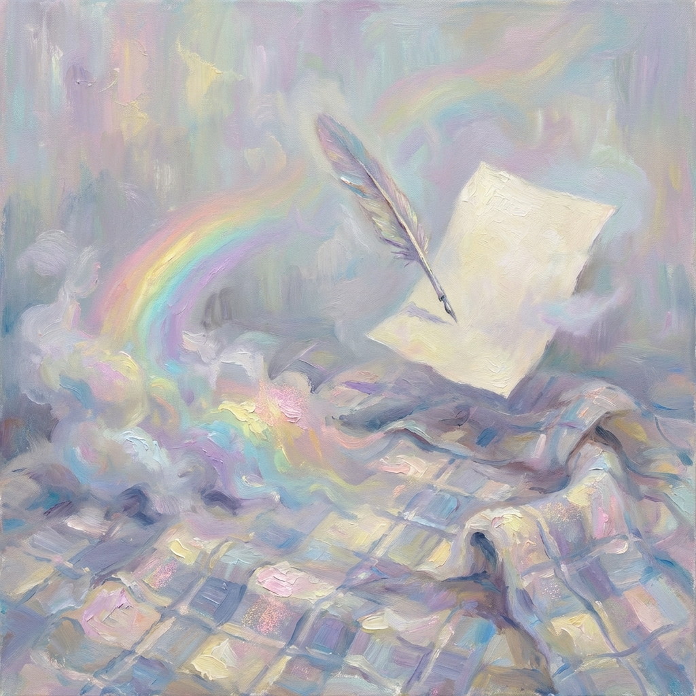

Un istante per sempre

Penna e carta
sono sul mio plaid fatto di nuvole.
Lustrato l'ego,
sul mio cuscino iridescente
appoggio i miei pensieri vagabondi
per scrivere una poesia
fatta d'immagini e non di parole,
di assoluta quiete
simile all'arcobaleno
evanescente ma vero
come se quell'istante
fosse un istante per sempre.
sono sul mio plaid fatto di nuvole.
Lustrato l'ego,
sul mio cuscino iridescente
appoggio i miei pensieri vagabondi
per scrivere una poesia
fatta d'immagini e non di parole,
di assoluta quiete
simile all'arcobaleno
evanescente ma vero
come se quell'istante
fosse un istante per sempre.
Paola Spremulli
20 gennaio 2026